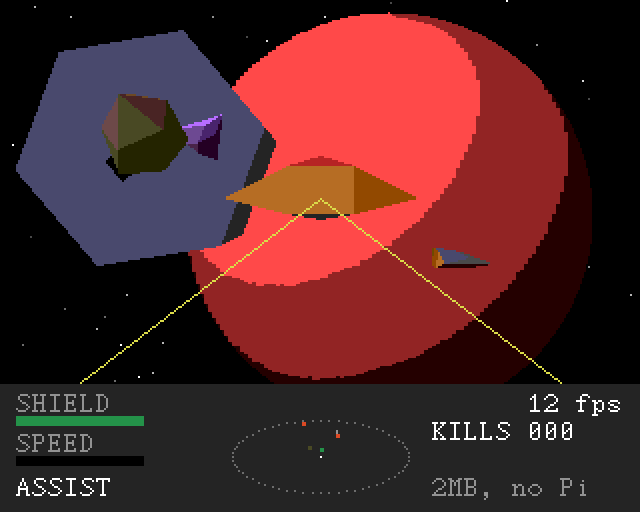

Solid 3D, on a Next
Ships, rocks and stations drawn as solid shapes, shaded by the light of the system's sun, with planets that have a day side and a night side. All in Z80 assembly, at 320 by 256.
One small ship, a galaxy of 256 stars, and a living to make.
Buy cheap where it's made, sell dear where it's needed, and keep the pirates off your cargo on the way. Take the jobs on the station's bulletin board, save for a better laser, and make your name.
Our own space-trading game in the spirit of the 80s classics, in solid, shaded 3D: the one game made to push the Next as far as it will go. (An argosy is an old word for a great fleet of merchant ships.)

How it plays
What's in the test build already, and what's on the way. Our own ships, stars and rules, not a remake.
Ships, rocks and stations drawn as solid shapes, shaded by the light of the system's sun, with planets that have a day side and a night side. All in Z80 assembly, at 320 by 256.
Pitch, roll and throttle, with flight assist to fly like an arcade game. Switch it off and you drift, turning freely, the way things move in space.
They come round, line up and open fire. Shoot back, watch the scanner, and keep an eye on your shield. Two more turn up when you've seen off the last.
The station turns slowly. Come in slow, nose straight at its slot, and turn with it. Miss, and you'll know about it.
Ten kinds of cargo, from water to weapons. Each world's prices come from what it makes and what it needs, and your own buying and selling pushes them.
Every system has its own name, economy, government and tech level, all worked out from one number. Pick a star on the chart, launch, and jump, if your fuel will reach.
The bulletin board offers deliveries, passengers and bounties on the local pirates. Each job has a deadline in days, and a jump takes time.
Fuel, a bigger cargo bay, a beam laser and a shield booster. And if the worst happens, the insurance wakes you at the station, poorer.
Laser heat and power to share between shields, engines and lasers; the law and its police; missions and a story; mining; and huge star systems crossed by a fast drive.
Made for a 2MB Next with the Raspberry Pi accelerator, which will play an orchestral score: our own piece for docking, and music that turns when a fight starts.
Screens
As a real Next draws them. Click a picture to see it bigger.
Download
It's free. One file, for a ZX Spectrum Next or an emulator. It's early: you can fly, fight, dock, trade and jump between the stars, but there's lots still to come, and things will change.
The game is made for a 2MB Next with the Raspberry Pi, but this build runs on any Next.
stargosy.nex to your SD card. Pick it in the Browser and press ENTER..nex file in CSpect.Changelog
Progress